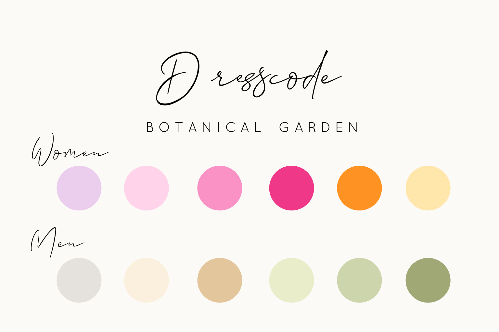

Cheyenne & Manuel

26 juli 2026
Eindelijk is het zover — wij gaan trouwen!
Eindelijk is het zover — wij gaan trouwen!
dagen
uren
min
sec
Onze bruiloft vindt plaats op de kwekerij van de ouders van Manuel. Het adres is:
Parkeren kan in de straat aan beide kanten van de weg. Gelieve er rekening mee te houden dat je geen in- en/of uitrit blokkeert. Wij willen jullie vragen om de auto niet op het terrein van de kwekerij te parkeren.
13:30 uur
14:00 uur
15:00 uur
18:00 uur
Laat ons weten of je er bij bent, en wat jouw voorkeuren zijn voor het diner via onderstaand formulier. Met respect voor onze kleine vriendjes, is onze bruiloft niet ingerecht voor babies en kinderen.
RSVP & Menukeuze invullenVoor onze bruiloft kiezen we voor een casual chic dresscode in het thema Botanical Garden. Laat je inspireren door onderstaande kleuren:

Vrouwen: Linnen, chiffon of satijn passen mooi bij de botanische sfeer. Houd er rekening mee dat een deel van het terrein grind en gras is.Wil je iets organiseren, een speech geven of iets afstemmen met onze ceremoniemeester? Neem gerust contact op.
Ceremoniemeester - Suzanne Bolsius
📧 bruiloftbastin@gmail.com
📱 +316 55 58 77 40
Na onze bruiloft willen wij een onvergetelijke reis naar Lapland maken.